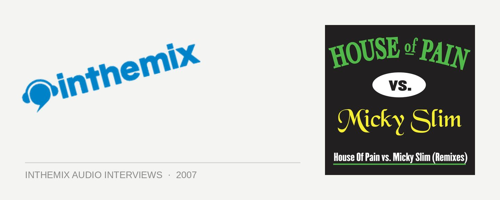

Micky Slim [Audio]: Ready to jump around down under
STREAMING AUDIO INTERVIEW
You might not know his name just yet, but chances are you’ve heard his music… Micky Slim’s somewhat gargantuan remix of the House Of Pain hip-hop classic ‘Jump Around’ has caused dancefloor mayhem across the globe. The track was responsible for shooting Slim onto the worldwide stage, with offers flooding in to remix the likes of Calvin Harris, Chris Lake and Rene Amesz following its success. However, perhaps most notably, it helped Micky to gain his coveted Godskitchen global residency, which sees him making his maiden voyage to Australia in September for a national tour.
His association with the clubbing brand stretches back quite some time, first as a punter (he was a regular at the club in the UK and had attended their Global Gathering festival each year) and then as a Godskitchen Electric UK resident. When Slim stepped up to replace James Zabiela at the last minute for the Global Gathering festival in 2006 – playing a 45 minute live set on BBC Radio 1 after Zabiela was stuck in traffic – his position as one of the dance scene’s most exciting new talents was cemented.
Mick Slim tours Australia for the first time with Godskitchen in September and October:
Fri Sep 28 – Metro City & Capitol, Perth
Sun Sep 30 – Home, Sydney
Fri Oct 5 – The Met, Brisbane
Sat Oct 6 – Melbourne Park, Melbourne
Check this clip of Micky Slim interviewed just after his Global Gathering set in 2006: